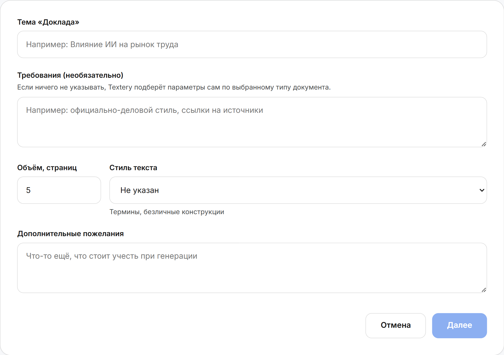
Опишите задачу
Укажите тему, тип работы,
объём и требования
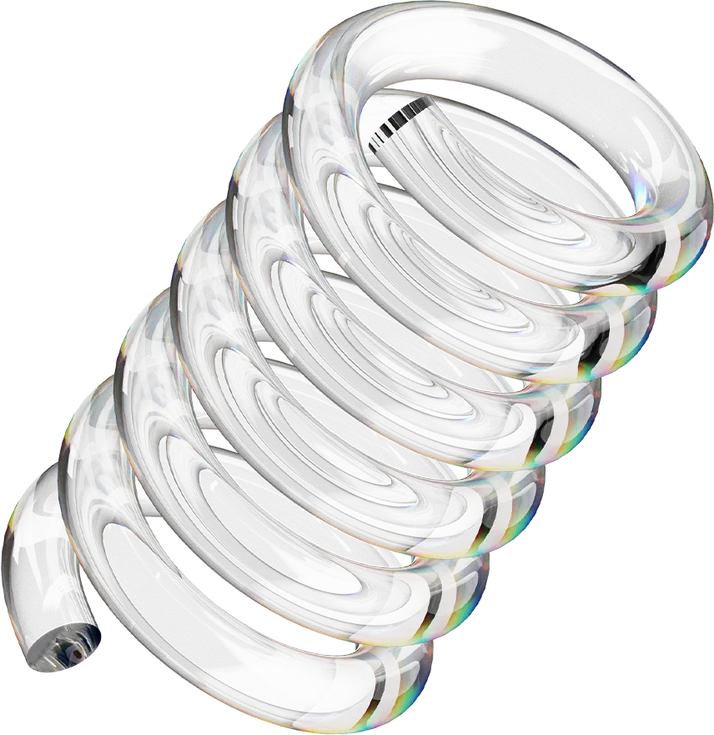
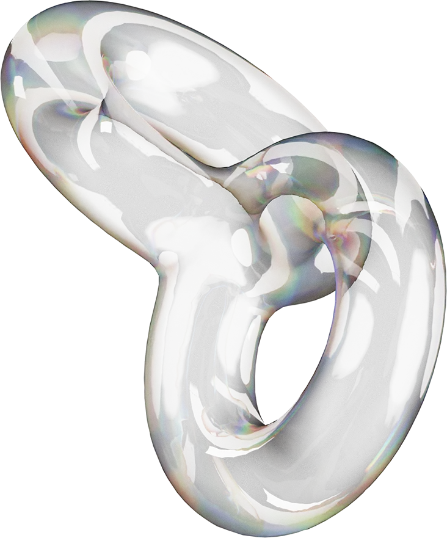
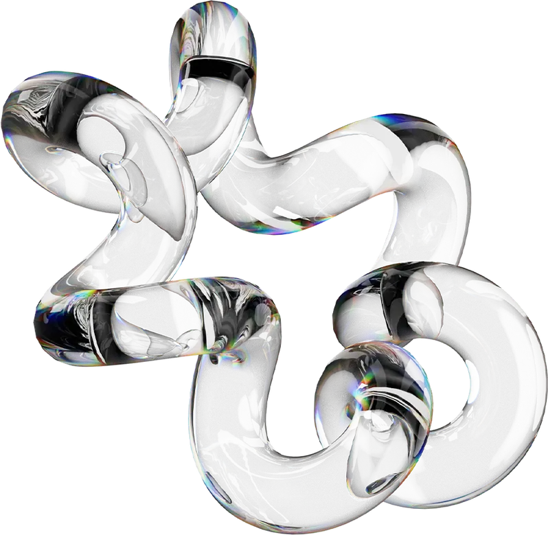
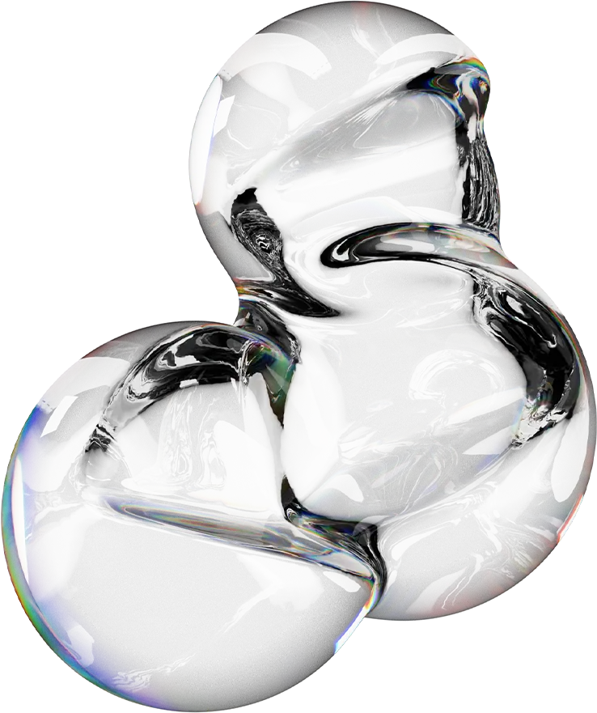
Создавайте профессиональные доклады, как в Word, с помощью
искусственного интеллекта. Генерация докладов за 30 секунд
Профессиональных Word документов создано с помощью Textery AI
Среднее время генерации доклада, реферата, эссе, сочинения
Экспорт в Word и PDF без сжатия и искажений
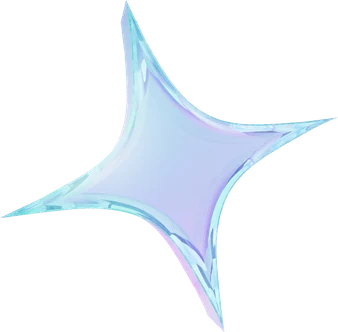
От темы до готового документа — три шага
без лишних действий

Укажите тему, тип работы,
объём и требования
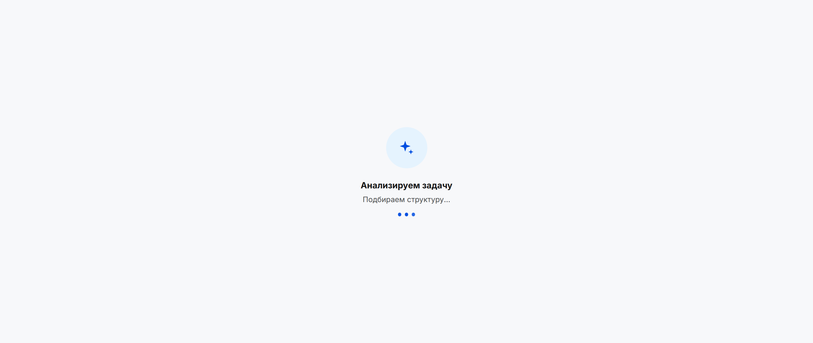
ИИ сгенерирует структурированный документ за 30 секунд
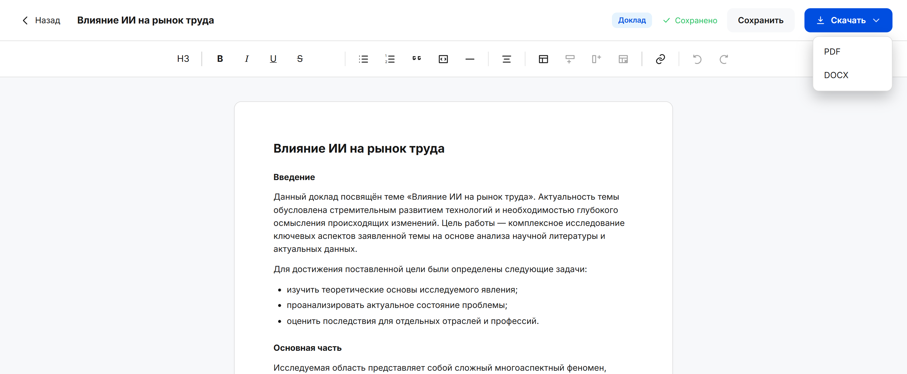
Доработайте текст во встроенном редакторе и скачайте в Word или PDF
Закрываем все этапы работы с текстом: от постановки задачи
до готового файла
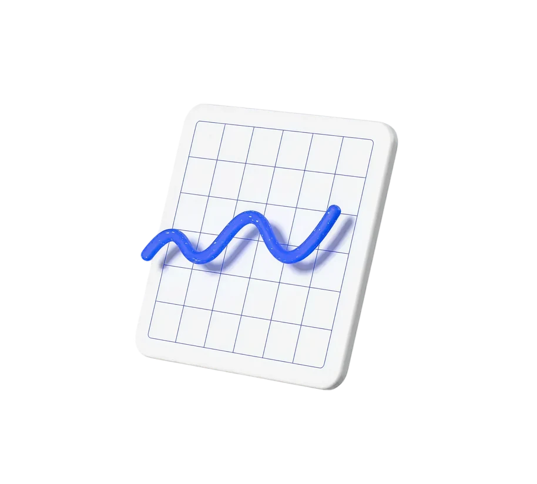
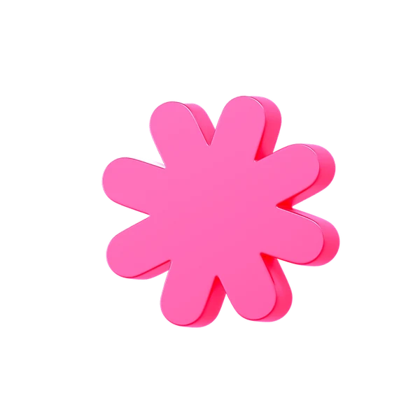
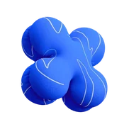
Автоматическое создание структуры и содержания текста из вашего описания
Полноценное редактирование текста прямо в браузере без установки Word
Экспорт в PDF с сохранением всех элементов для печати и рассылки
Автоматическое сохранение изменений, ничего не потеряется при сбое
Нативная поддержка русского vs автоперевод конкурентов.
Сравнение генерации одного промпта
Использует корректную деловую лексику без англицизмов и дословных переводов
Textery AI изначально обучена понимать и генерировать на русском языке
Понимает сложные запросы и сохраняет логику, и нюансы даже в многосоставных заданиях
Не адаптируют лексику под русскоязычную аудиторию, подставля английские термины
Обучены на английском языке и переводят русский текст, теряя смысл и контекст
Упрощают или искажают исходную задачу, теряя второстепенные и ключевые смыслы
98% точность — без потери форматирования, шрифтов
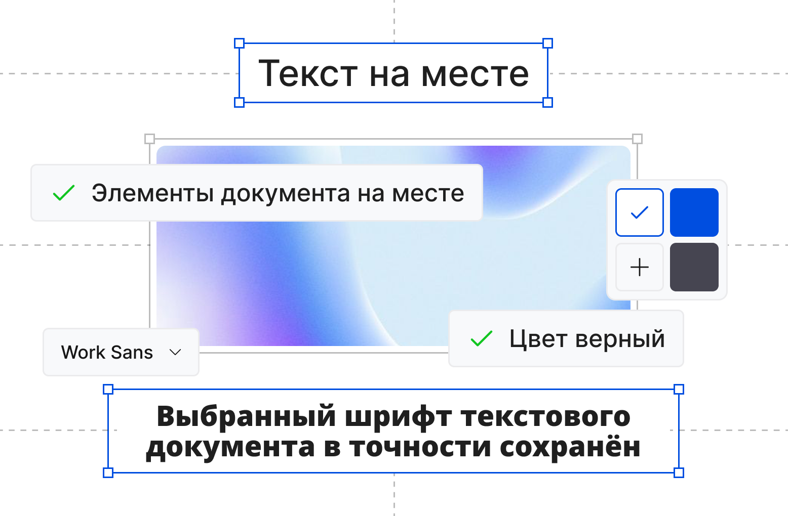
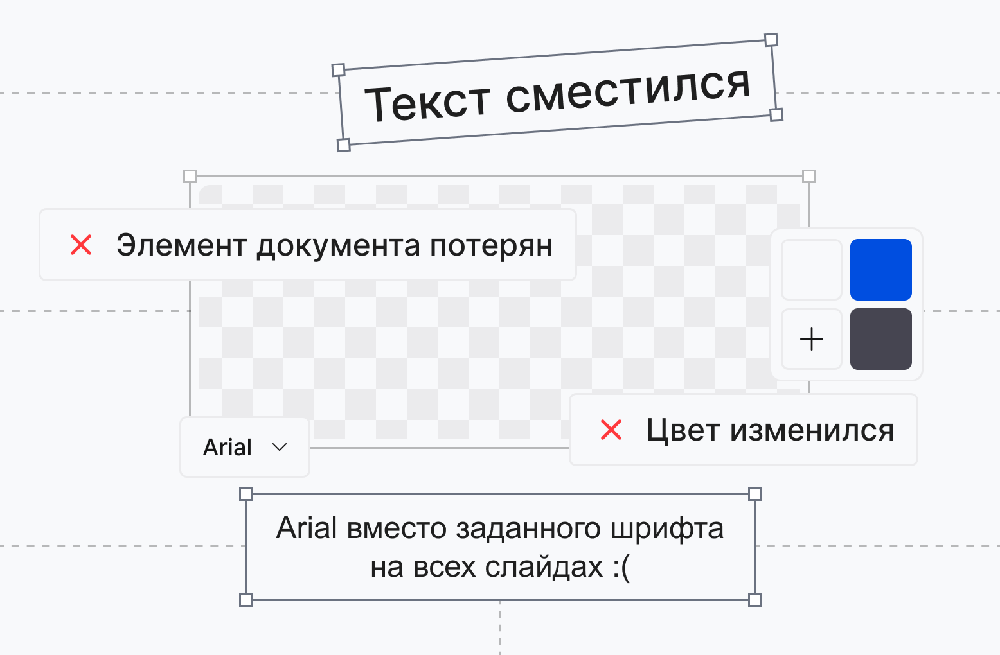
Экспорт без потерь. Текстовый документ сохраняет исходную вёрстку, шрифты и другие элементы.
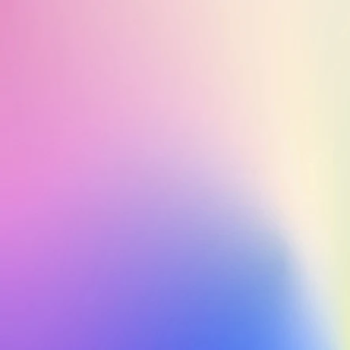
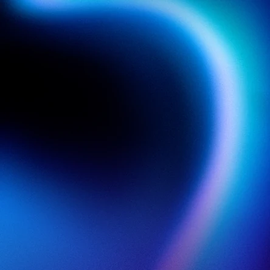
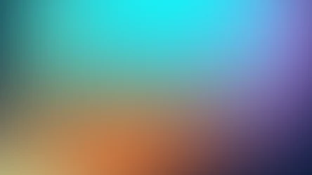
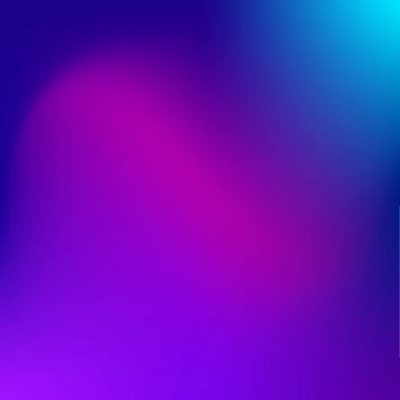
↗Честное сравнение с главными конкурентами
на рынке AI-презентаций
Не тратьте время на поиск — мы собрали
всё самое важное в одном месте
Что такое Textery AI и как работает нейросеть для текстовых документов?
Textery AI — это нейросеть для автоматического создания текстового документа с помощью искусственного интеллекта. Вы описываете тему доклада, эссе, реферата или сочинения — и получаете готовый профессиональный Word или PDF файл за 30 секунд. ИИ анализирует контент, создаёт структуру документа, генерирует текст, подбирает элементы оформления.
Чем Textery AI отличается от Gamma, Beautiful.ai и других конкурентов?
Textery AI — единственная нейросеть, изначально обученная на русском языке. Конкуренты используют автоперевод, что приводит к ошибкам и неестественным формулировкам. Также мы в 2 раза быстрее (30 сек против ~67 сек), точность экспорта в Word и PDF 98% против ~74% у конкурентов, оплата в рублях российскими картами, работа без VPN.
Как долго создается текстовый файл в Textery AI?
Весь процесс создания документа занимает не больше 45 секунд. Описываете нужную вам тему доклада, реферата, эссе или сочинения и нажимаете кнопку «Сгенерировать». Нужный текстовый документ уже перед вами!
Можно ли редактировать сгенерированные текстовые документы?
Да, после генерации вы можете редактировать текстовый файл в онлайн-редакторе прямо в браузере или экспортировать в Word или PDF для дальнейшей работы. Меняйте тексты, цвета, шрифты, добавляйте свои изображения и диаграммы. Полный контроль над каждым элементом файла.
Какие форматы поддерживает экспорт текстового документа?
Вы можете экспортировать текстовый файл в форматы Word или PDF, или получить веб-ссылку для онлайн-просмотра. При экспорте в Word и PDF сохраняется 98% форматирования — шрифты, цвета, позиции элементов остаются на своих местах.
Из каких источников можно создавать файл?
Textery AI создаёт текстовый файл из любых источников: просто текст или веб-страницы по URL. Нейросеть автоматически извлекает ключевую информацию и структурирует её в документ.
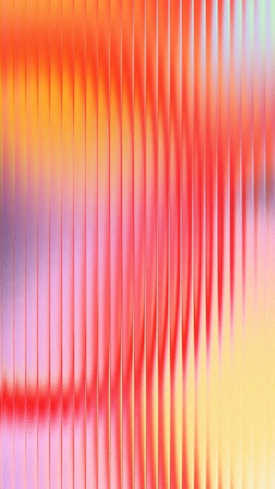
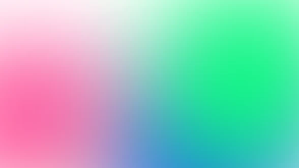
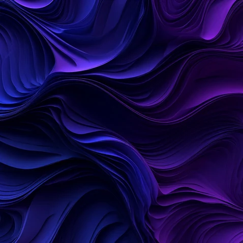
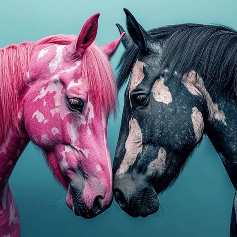
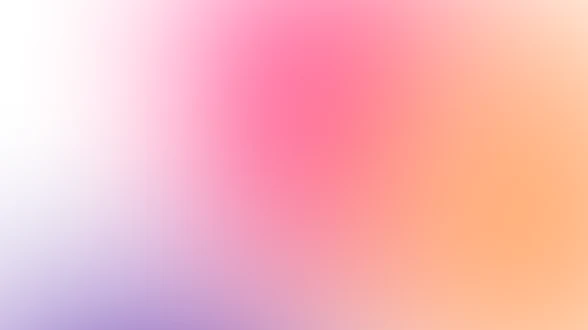
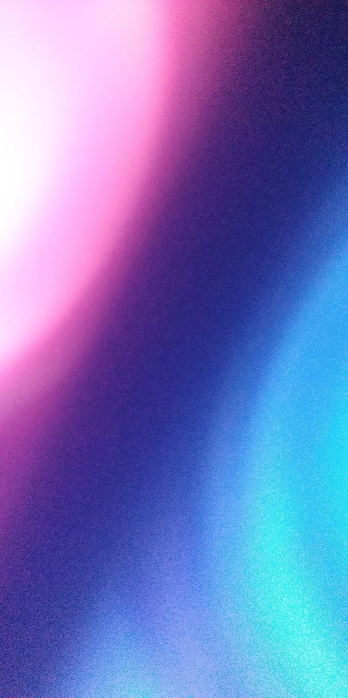
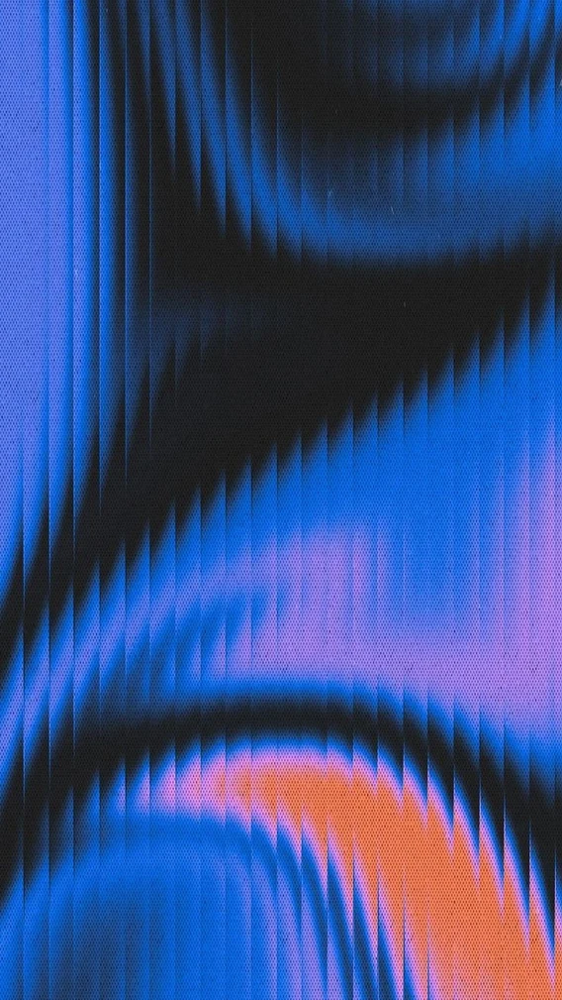
Без регистрации. Без кредитной карты.
Просто попробуйте прямо сейчас.